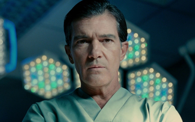
Antonio Banderas - Dr. Robert Ledgard
Elena Anaya - Vera Cruz / Gal Ledgard
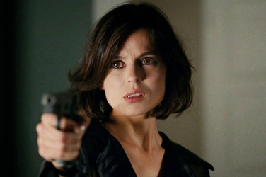
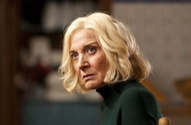
Marisa Paredes - Marilia
Jan Cornet - Vicente Guillén Piñeiro
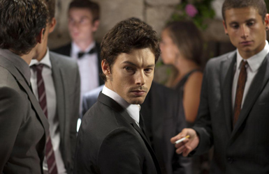
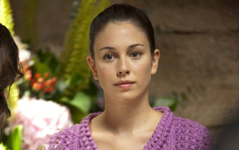
Blanca Suárez - Norma Ledgard
Zeca
Cristina
Agustín's Son
President of the Institute of Biotechnology
Policeman
Yoga teacher on TV
Friend 2
Musician
Agustín Almodóvar - Agustín
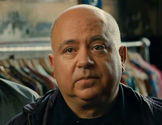
Plastic surgeon Robert Ledgard was successful in cultivating an artificial skin resistant to burns and insect bites, which he calls "GAL", that he says he has been testing on athymic mice. He presents his results in a medical symposium but when he privately discloses he has also conducted illegal transgenic experiments on humans, he is forbidden to continue with his research.
On his secluded estate, Ledgard is keeping a young woman named Vera captive, with the help of one of his servants, Marilia. Due to the suspension of his official experiments, Robert asks Marilia to dismiss the other servants.
While Robert is out, Marilia's son Zeca, having committed a robbery, arrives in a Tiger costume and asks his mother to hide him for a few days. He sees Vera on Ledgard's security camera screens and demands to see her in person. When Marilia refuses to let him stay after she invites him in, he binds and gags her and then rapes Vera. Robert arrives and kills Zeca. While Robert disposes of Zeca's body, Marilia tells Vera that she (Marilia) is the mother of both Zeca and Robert by different men, a fact she has not shared with them. Robert was adopted by Marilia's employers but was ultimately raised by her. Zeca later left to live in the streets and smuggle drugs, while Robert went to medical school and married a woman named Gal. When Zeca came back years later, he and Gal ran off together. They were involved in a terrible car crash in which Gal was badly burnt. Zeca had left the scene assuming her to be dead, while Robert had taken her from the car (in the present, Zeca had mistaken Vera for Gal, something she did not deny). Thereafter she lived in total darkness without any mirrors. One day, while hearing her daughter Norma singing in the garden, Gal accidentally saw her own reflection in the window; traumatized by the sight, she jumped to her death.
In the present, Robert returns and spends the night with Vera. During the night, he dreams of his past, specifically the night of a wedding six years earlier, where he finds Norma (his daughter) unconscious on the ground. Norma, who had been taking medication for psychosis - having been rendered mentally unstable due to witnessing her mother's suicide - comes to believe that Robert had raped her upon awakening with him above her; she subsequently develops a fear of all men and spends eight years in a mental health facility. She eventually kills herself in the same manner that her mother did.
Vera, too, dreams about the same event: Vicente, a young man who works in his mother's dress shop, crashes the wedding and meets Norma. Like others at the party, he is under the influence of drugs. He walks with Norma into the garden. She lists the psychiatric medications she has taken. Norma begins to take off some of her clothes, stating she would be naked all the time if she could. Vicente kisses her and compliments her. While they are lying down with Vicente on top of her, she suddenly starts to have a frantic reaction to the music playing - the same song she was singing when her mother committed suicide - and starts screaming. Vincente attempts to hush her screams, leading to her biting his hand. He slaps her, knocking her unconscious. Whether or not Vicente subsequently rapes Norma is left ambiguous. After finishing, he then puts her clothes back in place and flees the scene, looking around nervously for potential witnesses, just before Robert arrives, not noticing him notice him leaving on his motorbike.
Robert tracks down Vicente and has him knocked off his motorbike, kidnaps him, and holds him in captivity. His mother's search for him remains unsolved. Meanwhile, Robert subjects him to a vaginoplasty and later instructs him how to slowly stretch his new vagina. Over a period of six years, Robert physically transforms Vicente into a replica of his late wife, and renames him Vera. During this period of time, Vicente struggles to keep himself sane and cling to the core of his true identity.
After an absence of four years, Marilia returns to work in Robert's house to look after Vera (Vicente). Vera reveals to Marilia that he has been held captive for the last six years.
Back in the present, Robert's new relationship with Vera dismays Marilia, who does not trust Vera. Fulgencio, one of Robert's colleagues, reads a news story about the missing Vicente and recognizes him as one of their sex-change patients. He accuses Robert of falsifying Vicente's consent and of experimenting on him. Vera (Vicente) suddenly stands there and supports Robert, asserting his willing participation and states that he had always been a woman. During the night, Robert and Vera start having sex, but Vera tells him that it is still painful after the Tiger's rape. Ostensibly going downstairs to find lubricant, she retrieves Robert's gun and kills Robert. Marilia, alerted by the sound of the shot, goes in with her own pistol in hand and finds her son Robert dead on the bed. She then too gets shot by Vera (who was hiding under the bed) and says with her dying breath "I knew it."
Freed from captivity and the need to play along with Robert's whims, Vicente returns to his mother's dress shop for the first time since being kidnapped, tearfully tells his lesbian ex-colleague Cristina (whom Vicente had loved six years prior) of his kidnapping, forced sex change, and the murders. Then, as his mother enters the room, Vicente quietly reveals his identity to them in the final line of the movie - "I am Vicente".
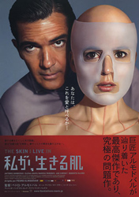
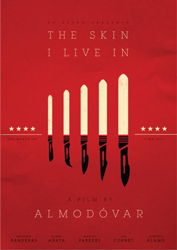
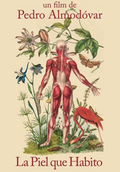
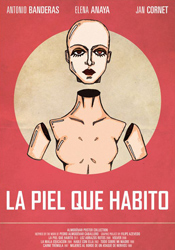
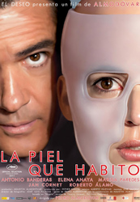
Michael Curtiz (1932) - Antonio Banderas is like the mad scientist who creates a synthetic skin.
Jean Manzon / José Toledo - Performed by Concha Buika